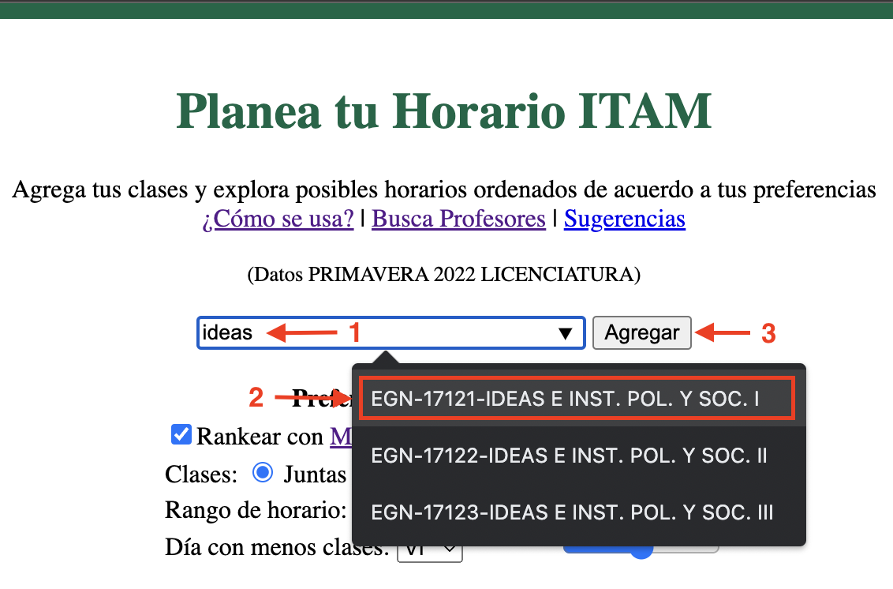
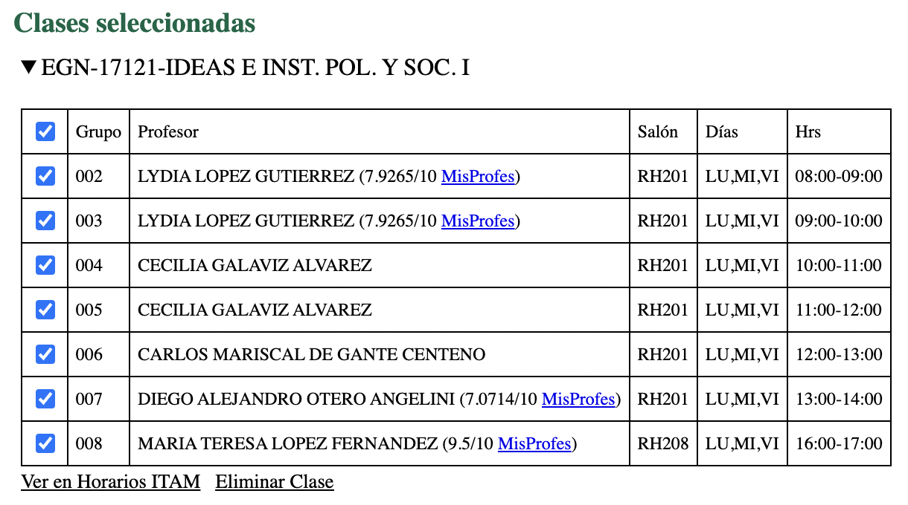
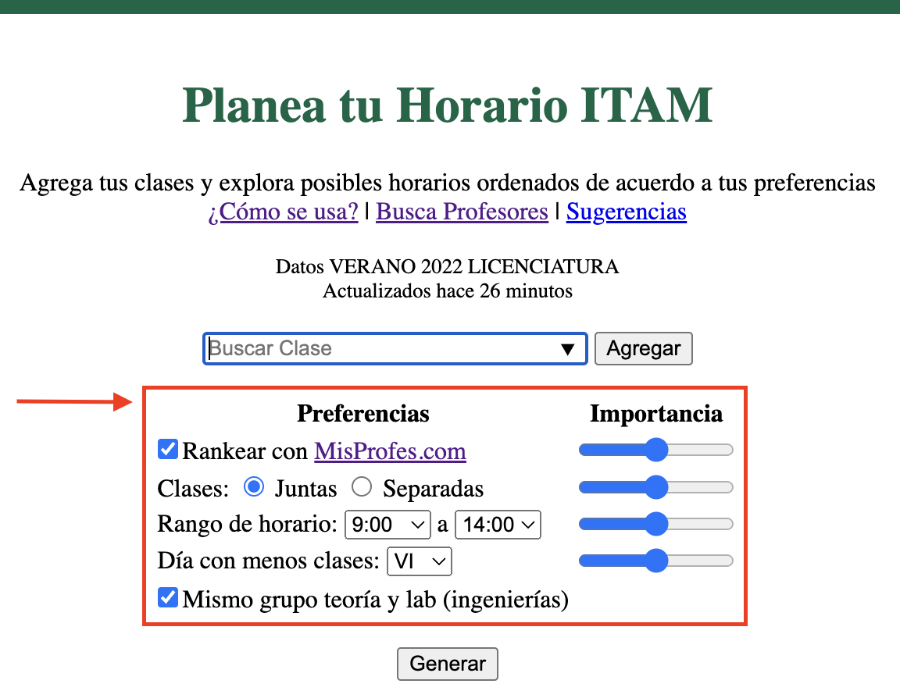
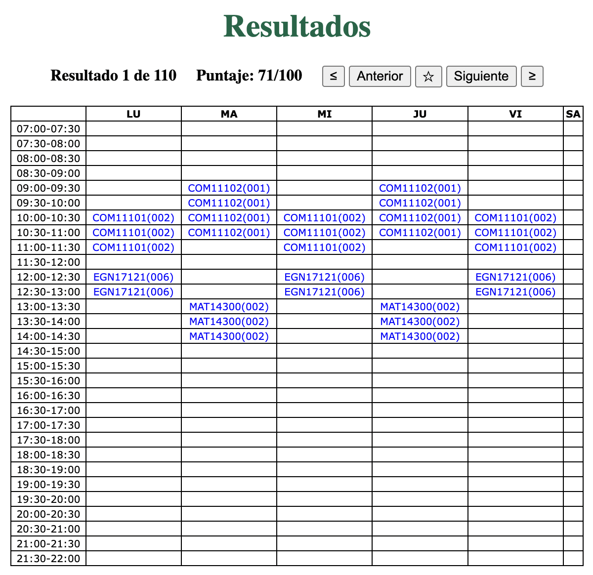

Sigue los pasos ilustrados a continuación para todas las clases que tengas planeadas cursar.

Las clases agregadas se muestran en el apartado de “Clases seleccionadas” en la parte inferior de la página. Oprime el nombre de una clase para desplegar sus grupos y otra información relevante.

En la primera columna, las casillas seleccionadas indican los grupos se tomarán en cuenta al generar los horarios. Si te gustaría incluir sólo algunos grupos puedes deseleccionar el resto.
Si el perfil del profesor del grupo existe en MisProfes.com se despliega su calificación general y link al perfil a un lado de su nombre.
Para consultar los horarios de la clase en la página de Grace del ITAM oprime “Ver en Horarios ITAM” y para eliminar la clase de la lista de clases seleccionadas oprime “Eliminar Clase”.
Puedes ingresar tus preferencias en el panel o saltarte este paso y proceder con las preferencias predeterminadas.

Las preferencias que puedes ingresar incluyen:
Además, puedes ajustar la importancia que se le da a cada preferencia con las barras deslizadoras a un lado de cada una, en la columna “Importancia”.
Si seleccionas Mismo grupo teoría y lab se generan solo horarios donde el grupo de teoría coincide con el grupo de laboratorio para materias que lo tengan (usualmente ingenierías).
Oprime el botón “Generar”. Se desplegará el panel de “Resultados” con tus horarios ordenados de acuerdo a tus preferencias.

En el panel se muestra cada uno de los horarios generados en un formato similar al usado en la página de Grace del ITAM.
Para navegar entre los horarios usa los botones “Anterior”, “Siguiente”, “≤” y “≥”. En la parte superior izquierda se muestra el número de horarios generados y el puntaje calculado asociado con tus preferencias.
Puedes guardar horarios oprimiendo el botón ☆. Tus horarios guardados aparecen en la sección de “Opciones Guardadas” y si tienes cookies habilitados se guardarán, junto con las clases seleccionadas, durante 30 días en tu navegador.
Para detalles sobre la implementación técnica de la página, incluyendo el hosteo, scrapeo de datos y la función que usa para capturar tus preferencias, lee el README del proyecto.
Cualquier sugerencia para mejorar el proyecto es apreciada! Mandar a ecantuce{arroba}itam.mx.
Nota: El proyecto es open-source y el código está en GitHub.